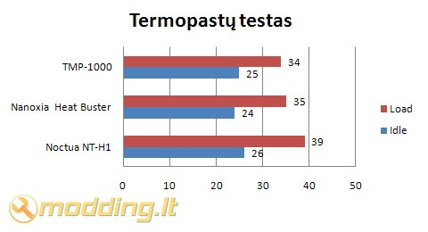

Nexus TMP-1000 termopastos apžvalga
TMP-1000 - tai olandų kompanijos Nexus Technology BV, besispecializuojančios aušinimo ir PC tildymo komponentų gamyboje, sukurta termopasta, kurios sudėtyje yra 30 % kuo tikriausio sidabro, kuris pagerina pastos šiluminį laidį. Gamintojas teigia, kad TMP-1000 neišdžiūsta ir nepraranda savo savybių (skystumo, tepumo, paviršiaus drėkinimo) net ir po ilgo naudojimo aukštose temperatūrose. Pažiūrėkim ko ji iš tiesų verta.
Žvilgsnis iš arčiau
Nexus TMP-1000 pakuotė skaidri, viduje tik pastos švirkštas. Ant pakuotės nurodytos termopastos savybės bei gamintojo rekvizitai.
TMP-1000 supilta į standartinį visoms termopastoms švirkštą. Švirkšto antgalio skylutė yra gan siaura, todėl iššvirkščiamos pastos kiekį lengvą dozuoti. Gamintojo nuomone, švirkšto turinio turėtų pakakti net 10-čiai CPU padengti (pastos neto svoris - 1,0 gr). Termopastos konsistencija labai gera - ji nei per skysta, nei per tiršta. Lengvai užtepama ant paviršiaus, taipogi nesunkiai nuvaloma vata.
Savybės
Nexus TMP-1000 pasižymi šiomis savybėmis:- Riebalinė konsistencija
- Sudėtyje yra 30 % sidabro
- Netaki (nelinkusi pratekėti)
- Stabili (išlaiko savo savybes) aukštose temperatūrose
- Didelis šiluminis laidis
- Sudėtyje nėra švino ir kitų kenksmingų sunkiųjų metalų
- Neerzina odos
- Bekvapė
- Lengvai užtepama
Testavimas
Štai mano PC konfigūracija:- CPU: AMD ATHLON II X2 250 AM3 BOX
- CPU Cooler: Noctua NH-C12P
- MB: 770-C45 MSI AM3 AMD770 DDR3 SERIAL PORT ATX 8-CH
- RAM: Kingston 4GB 1333MHZ DDR3 NON-ECC CL9 DIMM KIT
- GPU: MSI HD 5450 PCIE 1GB GDDR3 VGA/DVI/HDMI
- HDD - WD 320 GB 7200rpm + 500 GB 7200rpm SATA
- DVDRW: LG DVDRW 22X SATA BLACK BARE BULK
- PSU: Cougar S 700
-
CASE: Fractal Define R3, Arctic White
- CASE Fans: Nanoxia DX14-700 140 mm + Fractal Design 120mm @ 1350rpm
Kaip buvo testuota:
Idle: Kompiuteris, dirbantis „tuščia eiga“, buvo paliekamas geram pusvalandžiui. Šio režimo metu veikė tik kasdieninės programos, nebuvo veikiama nieko ypatingo.
Load: Kompiuteris geras 20 min. buvo kankinamas "S and M Stres Tests" sintetiniais testais. Programa buvo nustatyta tik CPU testavimui. Pasirinktas vidutinis testavimo laikas ir aukšta procesoriaus apkrova, imituojanti žaidimų žaidimą ar darbą su 3D grafika. Šylimo kreivės (procesoriaus temperatūra), taip pat, buvo stebimos "S and M Stres Tests" programoje.

Išvados
Pliusai:
- geri aušinimo rezultatai
- gera konsistencija - lengvai tepama ir netaki
- neerzina odos ir yra bekvapė
- aukštas šiluminis laidis
- išlaiko savo savybes aukštose temperatūrose
- gera kaina
Minusai:
- rinkinyje nėra tepimo mentelės
 Kaip matote, Nexus TMP-1000 termopasta pasirodė tikrai neblogai. Temperatūros teste ji pralenkė savo konkurentes, o darbas su ja buvo beveik grynas malonumas. TMP-1000 konsistencija yra tiesiog ideali, ji nei per tiršta, nei per skysta. Ją lengva išspausti iš švirkšto ir tolygiai padengti ant CPU. Nuvaloma ji taip pat lengvai, kaip ir užtepama, tereikia tik gniužulėlio vatos. Gaila, bet prie pastos nėra komplektuojama užtepimo mentelė, todėl nepatyrusiam naudotojui gali iškilti šiek tiek pastos padengimo keblumų. Žinoma, įskaitant šio gaminio žemą kainą, mentelės nebuvimas komplekte pilnai suprantamas.
Kaip matote, Nexus TMP-1000 termopasta pasirodė tikrai neblogai. Temperatūros teste ji pralenkė savo konkurentes, o darbas su ja buvo beveik grynas malonumas. TMP-1000 konsistencija yra tiesiog ideali, ji nei per tiršta, nei per skysta. Ją lengva išspausti iš švirkšto ir tolygiai padengti ant CPU. Nuvaloma ji taip pat lengvai, kaip ir užtepama, tereikia tik gniužulėlio vatos. Gaila, bet prie pastos nėra komplektuojama užtepimo mentelė, todėl nepatyrusiam naudotojui gali iškilti šiek tiek pastos padengimo keblumų. Žinoma, įskaitant šio gaminio žemą kainą, mentelės nebuvimas komplekte pilnai suprantamas.
Susumavus visus mano postringavimus, Nexus TMP-1000 termopastai suteikiu 9 balus iš 10 galimų, kas suapvalinus, atitinka 5 modding.lt rakčiukus.
Nexus TMP-1000 termopastos galite įsigyti daugelyje Lietuvoje kompiuterine technika prekiaujančių parduotuvių, jos kaina apie 8Lt.Modding.lt komanda dėkoja Dennis van Driel iš www.nexustek.nl už apžvalgai suteiktą produktą.
Jei norėsite pakomentuoti mano straipsnį arba pareikšti savo nuomonę, apsilankykite Modding.lt forume.


{kind=link}
{kind=link}
{kind=link}
{kind=link}
{kind=link}